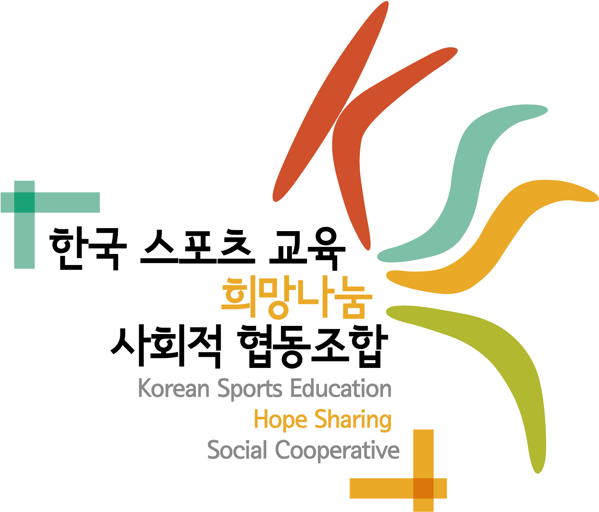
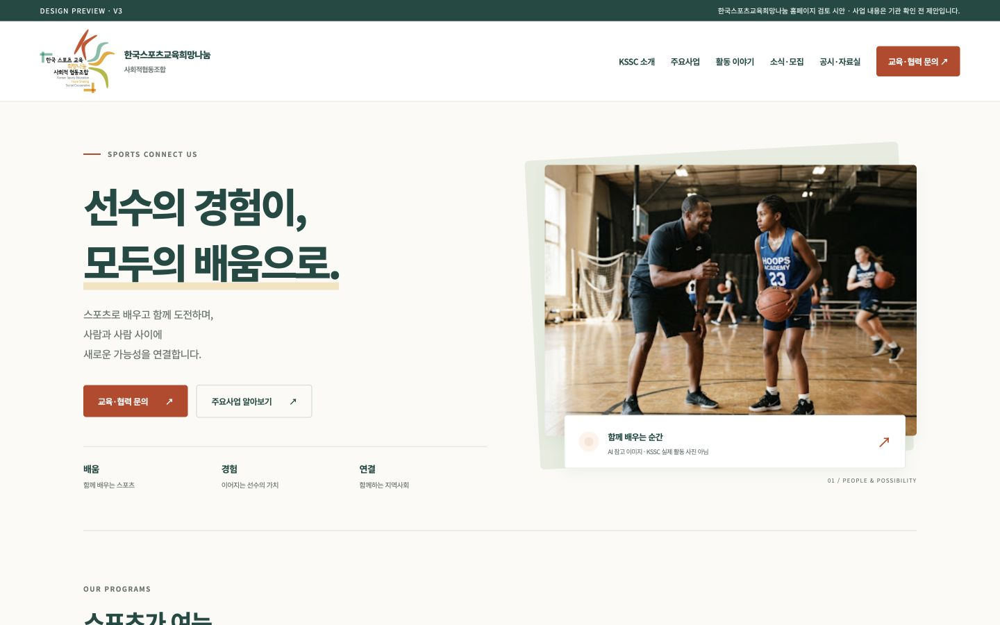

어떤 기관인지 명확하게
선수의 경험과 스포츠교육, 지역사회의 연결을 첫 화면과 대표 사업으로 전달합니다.

홈페이지 구축 제안한국스포츠교육희망나눔 사회적협동조합KSSC의 활동과 가치를 알리고,
교육·협력·후원으로 이어지는 홈페이지를 제안합니다.

PC와 모바일 화면을 직접 확인해 보세요 ↗사이트의 사업 분류와 문구는 제안이며 기관 확인이 필요합니다. 로고는 기존 등록 이미지를 사용했고, 교육 사진은 실제 활동을 보여주는 자료가 아닌 AI 참고 이미지입니다.
방문자가 기관을 이해한 뒤 필요한 정보와
담당자에게 자연스럽게 도달하도록 설계합니다.
선수의 경험과 스포츠교육, 지역사회의 연결을 첫 화면과 대표 사업으로 전달합니다.
기부금·결산·경영공시 자료를 별도 메뉴와 메인 바로가기로 연결합니다.
학교·기관·기업·후원자가 자신의 목적에 맞는 경로로 문의하도록 구분합니다.
“우리 기관에 어떤 교육을 도입할 수 있나요?”
주요사업 → 실제 사례 → 교육 문의“KSSC와 어떤 활동을 함께할 수 있나요?”
기관 소개 → 협력 사례 → 기관 협력“어떤 활동을 하고, 기부금은 어떻게 사용하나요?”
활동 이야기 → 공시·자료실 → 후원 안내교육·협력 문의와 공시자료 확인이
메뉴 속에 묻히지 않도록 구성합니다.
자료 상세·첨부 다운로드는 실제 공개용 자료를 받은 뒤 개발·연결할 범위입니다.
딥틸·민트·주황과 밝은 바탕을 사용합니다.
굵은 한글 제목, 여백, 교육 현장 이미지가 중심입니다.
| 항목 | 현재 가안 | 후속 제작 |
|---|---|---|
| 메인·소개·사업 | 반응형 화면과 이동 경로 | 기관 승인 원고·실제 사례·사진 적용 |
| 공시·자료실 | 분류·연도·검색 및 빈 화면 | 자료 상세·첨부·등록 관리·외부 공시 연결 |
| 문의 | 유형 선택·입력 형식 검증 | 실제 수신·저장 방식·개인정보 처리 확정 |
| 소식·활동 | 목록 구성과 빈 상태 | 실제 게시물·관리자 등록·수정 |
| 운영 | 검토용 정적 사이트 | 관리 권한·백업·도메인·인수인계 |
온라인 후원 결제·정기결제·기부금영수증 자동발급, 회원 기능, 외부 시스템 연동은 별도 범위를 협의합니다. 예산과 납기 역시 최종 범위와 자료 준비 상황을 확인한 뒤 확정합니다.
메뉴·색감·첫 화면·필수 기능에 대한 의견 정리
최신 로고·사업·사진·공시자료·담당자 확인
승인 원고 적용·관리자 및 실제 접수 기능 개발
모바일·문의·첨부·공개정보 검수 후 인수인계
각 항목의 검토 스레드에 댓글을 남기면
의견을 모아 다음 수정본에 반영할 수 있습니다.
댓글 작성에는 GitHub 로그인이 필요합니다. 제안서와 가안은 로그인 없이 열람할 수 있습니다.